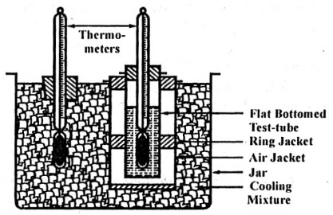

Q.7 Define and write the significance of the Pour Point.
Answer : Pour point of a liquid is the temperature at which the liquid ceases to flow on cooling.
A good lubricant must have low pour point, at least lower than the atmospheric or operating temperature.
Pour-points indicate the suitability of lubricants in cold conditions. Lubricant used in machine working at low temperature should possess low pour-point, otherwise solidification of lubricant will cause jamming of the machine. Pourpoint values of petroleum and non-petroleum lubricants are significant as many operations must function is sub-freezing conditions.
Pour point is determined with the help of pour point apparatus. The apparatus consists of a jar in which oil sample under test is filled. It is closed from the top by a cork, fitted with a thermometer. The jar is surrounded by other jacketed cylinder. At the bottom of the jacket, their fitted a disk of cork. This apparatus is shown in fig. 7.

Fig. 7
The whole apparatus is surrounded by freezing mixture (ice + CaCl2), contained in a jar. The oil sample present in the cooling bath is cooled till it does not flow on tilting the jar. After every 2o fall in temperature the jar is carefully removed from the cooling bath and tilted gently to see the movement